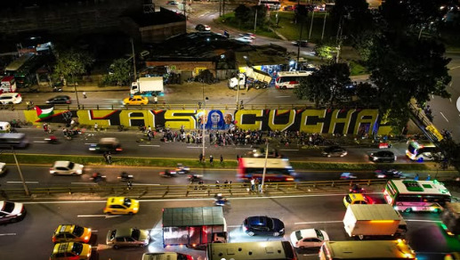
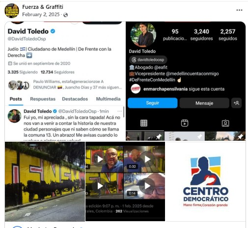
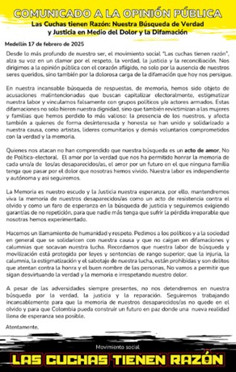
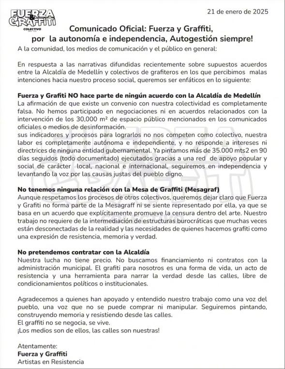
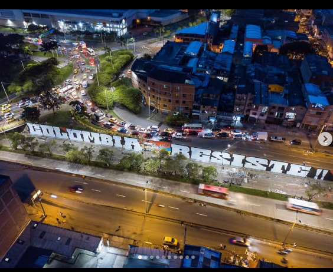
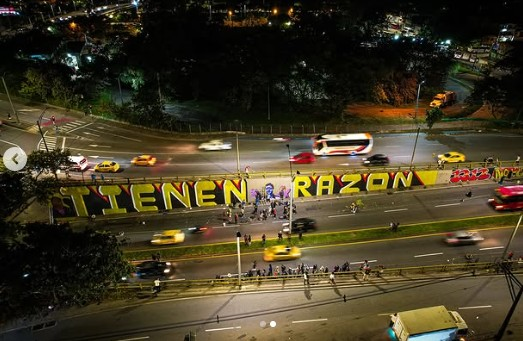

BLOQUE 1
Contra la pared: cuando el muro se vuelve campo de batalla

El primer muro no duró.
A finales de 2020, en la vía paralela, en el barrio Toscana, al norte de Medellín, un colectivo de grafiteros escribió esta frase a lo largo de 30 metros: “Nos están matando”. No era una consigna abstracta. Era una frase directa, sin metáforas, en un país donde los líderes sociales siguen cayendo uno a uno.
Duró casi 5 años hasta que lo borraron, producto del primer año de mandato de Federico Gutiérrez. El 8 de enero de 2025, una brigada oficial cubrió el mensaje con pintura gris. La justificación fue simple: mantenimiento urbano, orden, estética.
“Un graffiti acorde a lo que representa el distrito de Medellín”, dijo entonces el concejal Andrés “Gury” Rodríguez , por el partido Centro Democrático, quien sigue la línea política del alcalde de la ciudad, Federico Gutiérrez.
Pero el muro no quedó en silencio. Al día siguiente, apareció otra frase: “El arte no se calla”. Y tres días después, una que terminaría desbordando la ciudad: “Las cuchas tienen razón”.

PINTAR CONTRA EL BORRADO
El 13 de enero lo volvieron a borrar. Esta vez ya no era solo una frase. Era una acusación directa en medio de los primeros hallazgos de restos óseos en La Escombrera, un lugar con un marcado simbolismo de violencia y desapariciones misteriosas en la Comuna 13.
La respuesta institucional volvió a ser la misma: orden. “Yo como alcalde tengo la responsabilidad de mantener la ciudad bonita y en orden”, manifestó en rueda de prensa el alcalde Federico Gutiérrez.
Pero en la calle, la pregunta era otra: “¿El espacio público para quién?”, respondió una vocera de Fuerza & Graffiti. “La ciudad no es una hacienda donde pueden decidir qué se pinta y qué no”. Desde entonces, la misión de los colectivos de graffiti estuvo clara:
La alcaldía borra. Volvemos a pintar. Ellos vuelven a borrar.
Una secuencia que, lejos de apagar el mensaje, lo multiplicó. En menos de semanas, “Las cuchas tienen razón” apareció en Bogotá, Cali, Pasto, Barranquilla, Soacha, Neiva, Ibagué, Bucaramanga, Santander. El muro ya no era un lugar, era un símbolo de una lucha que seguía igual de fresca que en 2021.

Esta lucha sigue vigente incluso un año y medio después de la gran polémica. En medio de un ambiente de tensiones por la extrema polarización que está viviendo el país en época de elecciones e incertidumbres, algunos artistas del colectivo Fuerza & Graffiti traspasaron sus fronteras Y llevaron la expresión artística de protesta al Tablazo, en Rionegro, cerca a la residencia del expresidente Álvaro Uribe Vélez.
Rionegro es una ciudad donde las expresiones de arte callejero no suelen tener gran visiblidad a comparación de las de la capital de Antioquia o las de Bogotá; sin embargo, si tienen un impacto diferente. Medellín representaba hogar para las víctimas y los colectivos artísticos; pero Rionegro, el Tablazo, es territorio enemigo.
Y es que no es por exagerar. Pues en el momento en que los artistas de la juntada artística terminaron el graffiti con el texto "7837 ALMAS QUE NO TE DEJARÁN DORMIR" empezaron a llegar las autoridades. Primero fue la policía, pero luego llegó Álvaro Uribe en persona, iracundo y desencajado. Iba en sus pintas de finquero y político retirado, pero llegó con rodillos y pintura blanca a "blanquear" él mismo las letras en naranja y rojo chillón.
Hubo tumulto, agresiones verbales, discusiones, intentos de ejercicio de la fuerza oficial e intentos de disuasión. "Esperamos que se retiren los artistas para proceder nosotros" fue el claro llamado del ex-senador, centro de las polémicas principales relacionadas a los crímenes del programa de "Seguridad Democrática" y adjudicado como principal responsable de la muerte de esas 7837 almas que clamaban los artistas. Estos últimos, en una línea de defensa ante el mural, mantuvieron una protesta sentida en frente de Uribe y su compañía de escoltas, aliados y amigos.
Incluso apareció Andrés "Gury" junto a David Toledo para intentar disuadir a los manifestantes y varias pancartas de "Paloma y Oviedo a la presidencia" se ondearon por parte de los afiliados al Centro Democrático. El caso muestra que la disputa por la memoria, la voz y las paredes sigue más viva que nunca.
Cartografía del arte político
EL ARTE QUE INCOMODA
Para quienes pintan, la discusión nunca fue estética. “El arte no es para decorar. Si no incomoda, no es arte”, dijeron los voceros del colectivo Fuerza & Graffiti en Noticias Uno. La frase se repite entre diferentes colectivos de artistas, sin embargo, Fuerza & Graffiti es el grupo de graffiteros que ha estado tras las las pintas políticas en las paredes más polémicas en la capital antioqueña en los últimos meses.

Su postura es clara: no negocian. “No tenemos relación con la Alcaldía. No trabajamos para ellos. El graffiti es del pueblo y para el pueblo”, expresaron en un comunicado abierto donde fijaron su posición. Pero esa autonomía tiene un costo:
No hay contratos. No hay permisos. No hay garantías.
“Nosotros hemos intervenido más de 30.000 metros cuadrados sin pedir permiso”, dicen desde el colectivo. Y aun así, siguen.Porque, como lo plantea el investigador Ricardo Toledo, el conflicto no es solo legal, es simbólico: “Cuando el Estado no representa las preocupaciones ciudadanas, el arte callejero cuestiona ese monopolio del significado”.

CENSURA, MEMORIA Y PODER
El caso no es aislado. El borrado de murales con contenido político se ha repetido en distintos momentos y lugares. En Medellín, colectivos denuncian un patrón: los mensajes críticos son eliminados con rapidez, mientras otros permanecen.
Organizaciones como la Fundación para la Libertad de Prensa (FLIP) han señalado posibles casos de censura por postura ideológica como las que han ocurrido en Medellín.
Y no es solo una discusión local. Casos internacionales muestran el mismo mecanismo: borrar, sancionar, controlar. En un artículo publicado por un conglomerado de universidades de París llamado ‘Writing the History of Political Graffiti’ decían las autoridades: “We erase them, we arrest graffiti artists and put them in prison … they make their own and start again every night.”

El graffiti político, por definición, es efímero. Pero esa fragilidad es también su fuerza: revela el conflicto en tiempo real. Como lo expresó el Museo de Antioquia durante el mes de la disputa por los muros.
“Cada mural es un grito, un susurro o una pregunta incómoda”. En ese sentido, lo que está en juego no es solo un muro. Es la memoria.
El caso del mural del MOVICE (Movimiento Nacional de Víctimas de Crímenes de Estado) —eliminado pese a denunciar desapariciones forzadas— incluso generó preocupación internacional por libertad de expresión.
Borrar no es neutral. Borrar también es narrar.
Muros blanquea'os


LA CALLE COMO DISPUTA IDEOLÓGICA

El conflicto escaló y varios políticos locales fueron señalados de participar directamente en el borrado de murales. Desde el otro lado, las autoridades hablaron de “intervenciones politizadas” e incluso sugirieron vínculos con agendas nacionales por parte de los colectivos de graffiti.
En medio de ese cruce, los artistas rechazan cualquier cooptación. “No hacemos esto por dinero. Esto es memoria”, dijeron algunos de manera anónima en entrevistas para noticieros nacionales de televisión.
La disputa ya no es solo por pintar o no pintar. Es por quién tiene derecho a contar la ciudad.

LO QUE NO SE BORRA
Hay algo que el gris no alcanza a cubrir. Cada vez que un mural desaparece, algo queda: la foto, el registro, la conversación, la réplica en otra pared.
Como en el caso del artista argentino Fernando Traverso en su obra urbana de ‘Las bicicletas de Rosario’, donde alguien escribió debajo de un esténcil borrado:
“¿Alguien vio la bicicleta que dejé aquí?”.Lo que hace referencia a las 350 bicicletas pintadas una tras otra y que representan, cada una, un desaparecido durante la dictadura militar de 1976.
En Medellín, la lógica es similar. Borran uno, aparecen diez. Porque en una ciudad atravesada por la memoria, los muros no solo se pintan, se disputan. Y mientras haya alguien dispuesto a volver con pintura, brocha y una frase incómoda, el conflicto seguirá ahí, visible, aunque intenten cubrirlo. "Si tapan uno, pintamos mil”, es la consigna del movimiento graffitero. Y lo repiten en videos que difunden por redes, en arengas, en comunicados… por todos lados.
